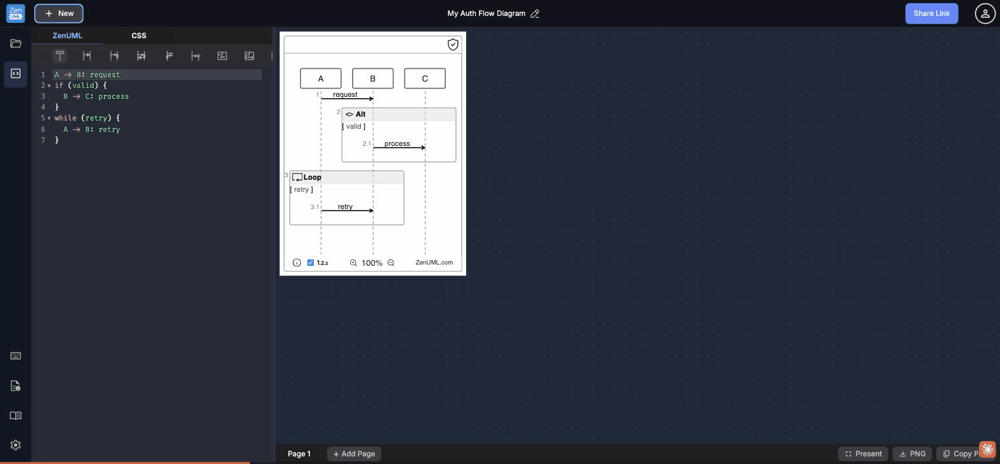

Systematic hover audit · 39 interactive elements surveyed · tooltip presence, mechanism consistency, and content quality

All 7 insert buttons in the editor toolbar (New participant, Async message, Sync message, Return value, Self message, New instance, ConditionalAlt) have title=null, aria-label=null, and no custom tooltip component. The visible text label alone leaves users without:
1. Keyboard shortcut — is there one? Can I trigger "Async message" from the keyboard?
2. Resulting syntax — hovering "Async message" should preview A ->> B: message
3. Insertion behavior — does it insert at cursor or append at end?
Competing tools (Mermaid Live Editor, draw.io, PlantUML Editor) all show syntax snippets in toolbar tooltips. New ZenUML users must click and inspect the inserted code to reverse-engineer the syntax.
title attribute with the pattern "[Label] — inserts: [syntax snippet]". Example: title="Async message — inserts: A ->> B: message". For a richer experience, replace with a Radix UI Tooltip showing the syntax with syntax highlighting and the keyboard shortcut if one exists.Three different tooltip strategies coexist with inconsistent behavior for sighted mouse users:
| Zone | Mechanism | Visual tooltip? |
|---|---|---|
| Sidebar icons | title attribute | ✓ Yes (native, ~1s delay) |
| Header buttons | aria-label only | ✗ No (screen readers only) |
| Toolbar buttons | Visible text label | ✗ No tooltip at all |
| Canvas footer | Nothing | ✗ No tooltip at all |
| Bottom bar (Present/PNG) | Nothing | ✗ No tooltip at all |
Impact: Users learn that hovering the sidebar icons works, then get zero feedback when hovering anywhere else. aria-label on header buttons ("Start a new creation", "Share diagram link") is consumed only by screen readers — sighted mouse users never see it. The pattern is broken.
The diagram canvas footer contains 5 interactive controls with zero tooltip:
• ⓘ — what does this show? (appears to open a tips overlay)
• ☑ 1.2.3 — completely cryptic; hovering reveals nothing. It toggles sequence step numbers, but this is undiscoverable without clicking.
• ⊕ / ⊖ — zoom icons with no label or shortcut hint
• 100% — clicking this resets zoom, but hover reveals no hint
The "1.2.3" checkbox is the worst offender — even an experienced UML author might not know what this does on first sight. The label reads as a version number, not as "show/hide sequence numbers."
title attributes: title="Show/hide step numbers" on the 1.2.3 checkbox, title="Tips & shortcuts" on ⓘ, title="Zoom in (Ctrl+Plus)" on ⊕, title="Zoom out (Ctrl+Minus)" on ⊖, title="Reset zoom to 100%" on the percentage text. Replace the 1.2.3 label with "1.2" or better — a sequence-number icon — and add a visible label "Step numbers" next to the checkbox.Even the 9 elements that do have tooltips (sidebar icons, header buttons) include no keyboard shortcut information. Modern productivity tools universally surface shortcuts in tooltips — VS Code, Figma, Linear, and Notion all follow the pattern: "Action Name (Shortcut)".
ZenUML has a dedicated Keyboard Shortcuts panel (accessible via the sidebar) but zero in-context shortcut hints. Users must remember to open that panel separately. For frequent actions like "New diagram" (Cmd+N if supported), the shortcut is entirely invisible at the point of action.
title="My Library (Ctrl+B)". For the Keyboard Shortcuts icon specifically, the tooltip "Keyboard Shortcuts (Ctrl+/)" would be self-documenting. Use a consistent format: label first, shortcut in parentheses.The three action buttons in the bottom-right corner of the app — "Present", "PNG", and "Copy PNG" — have no tooltip. "Present" is particularly ambiguous: does it open a link? Enter fullscreen? Launch a slideshow? A user who hasn't tried it has no pre-click information about the outcome.
"PNG" is slightly better (the format name is self-explanatory to technical users), but new users may not know whether clicking triggers a download, opens a dialog, or copies to clipboard.
title="Enter presentation mode (fullscreen)", title="Download diagram as PNG image", title="Copy diagram PNG to clipboard". These would disambiguate before the user clicks — especially important since PNG and Copy PNG look visually similar.